അധ്യായം 19
സോദോം നഗരം
വൃത്തം-- അതിസമ്മതാമിശ്രയായ കളകാഞ്ചി
നിഖിലഗുൂണനിലയനജനബ്രാമിനാദരാല്
നിവ്വാപണംചെണ്ത' കാനാന്ദിശമ്കൊരു
മഹിതതരരജതമയമേഖലാരൂപമായ?”
മങ്ങാതൊഴുകുന്നു യോര്ഭ്ാന് തരംഗിണി.
ഇതിനുടയതടമധി കസുന്ദരം; മാനവ --
രീക്ഷിച്ചുനിന്നുപോം കാഴ്ചതന് ഭംഗിയില്
ഫലദതരുനികരമ/ഥ സസ്യസന്ദേടഹവും
പാരം തിളങ്ങുന്ന പൈമ്പൽപ്രദേശവും 8
ശബള സുമ മനവരത മുതിരുമൊരു പുവല്ലി
സംഭരിച്ചീടുന്ന സങ്കീര്ണ്ണശോഭയും
നികടഭവി വളരുമൊരു കാട്ടില് ചരിക്കുന്ന
നീടുററ സിംഹശാര്ട്ര, ലാദിസംഘവും
നിഖിലജനഹൃദയമതു നിര്വ്വതിക്കൊള്ളന്ന
നീഡജമഗാനനിനാദന് കരവും
കൃഷകഗണ മനുനിമിഷമടിപണിയ മുത്തമ
കൃഷ്്യര്ഹമാകും നദീമാതൃകങ്ങളും 16
അതിപരുഷഹൃദയനൊരു മാനവന് കാൺകില-
മാനന്ദലീനനായ*ത്തിരാതാിരുന്നിടാ.
തടിനിയുടെ തടമതിനു നിടിലതിലകായിതം
ഭസാദോമഭിഖ്യയാര്ന്നുള്ള വന്പ്ട്ടണം
വടിവിനൊടു വിലസി വിബധേന്ദ്രലോകത്തിന്െറ
വന്പും പ്രതാപവും കീഴടക്കുംവിധം
നിരവധികധനനിചയസമജസമ്പന്നരായ*
നിസ്മലൈശ്വര്യരായ*ത്തീര്ന്നു തദ്വാസികാം. 24
ഭ്രവിണഗണമധികതര വൃഭ്ധിതേടും വിധയ
ദുപ്നരാകാതുള്ള മര്ത്ൃരാരിബ* ഭൂവി ?
വിഘസപരിപുഷിതരവര് മദമയമഹോദധയ
വീണും കളിച്ചും പുളച്ചം ദിനേദിനേ
ച്വവടുമുറ പിടി പലതു മഭ്ൃയസിച്ചാരൊടും
ശുഞ്ഞിയെൌടുത്തുനടന്നാര് നിരന്തരം.
ചെറുതുസമയം ലഭിച്ചാകിലിപ്പുരുഷര്
കൂതാട്ടമാദിയില് കാലം കളഞ്ഞിടും. ൫2
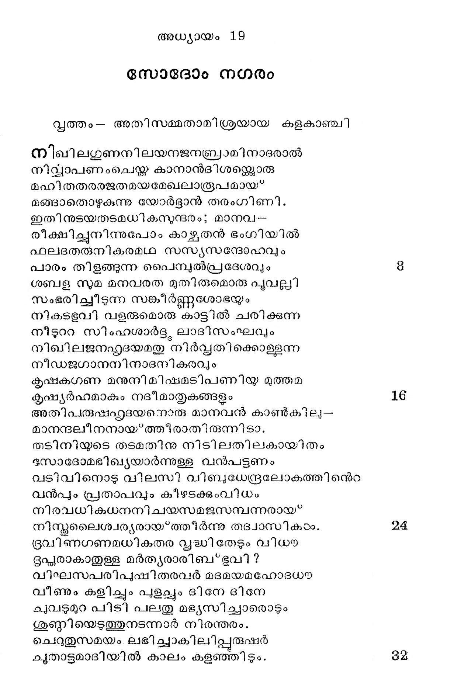
മദിരയവരുദരമതി ലൊരുപടി നിറക്കാതെ
മറൈറാന്നിലും മനമുററുവജ്ക്കാ ധ്രുവം.
കരുണയുടെകണിക യൊരുപൊഴുതുമിയലാത്തൊരി
കര്ക്കശര് കാട്ടം കഴുംകൈകളാല് സദാ
കച്രിമൂടുഹൃഭന്തരം വെന്തുവെന്തങ്ങിനെ
പാരംവിഷണ്ണരായ* പാവങ്ങളാകവേ.
ജഗദധിപഭൂതകവരനാക മബ്രാമിനെ
ജന്മദേശത്തുനി ന്നക്കനാനോളവും
ഒരുമയൊടു മനുഗമന മാശുചെയ്തോരു ലോ-
ത്തൊട്ടം മടിക്കാതെ വിട്ടപിരിഞ്ഞുടന്
നിജവസിതമതിനുചിതമെന്നു കണ്ടിപ്പുരം
നേരേ തെരിഞ്ഞെടുത്തത്ര പാര്പ്പാക്കിനാന്.
ധരണിയുടെ സഫലഗഥഗുണമൊന്നുമാത്രം നോക്കി
ധാര്മ്മികന് സോദോമിലെത്തിവസിക്കിലും
ബളുഭരിതനിധികളിതി കേളികേട്ടള്ളൊരു
ബാണാസരപ്പതീകാശരാം പയരരേ
അജനിലൊരു ഭയമുടയ മര്ത്ൃര്ക്കൊരിക്കലും
ആത്മമിത്രങ്ങളാ യൂരികരിക്കുവാന്
അരുതു പരമിതിലവവു മോക്കാതെ പോകയാ-
ലാരൺണ് തനയന് വ്യഥിച്ചാന് ബഛുുവിധം.
പിതൃരസഹജഭരണമവനുണ്ടായിരിക്കവേ
പാര്ത്താന് വസനകുടീരത്തി ലിപ്പൊഴോ
സ്ഥിരഭവനമതു നഗരി തന്നിൽ കിടന്ക്കയാല്
സ്വീകരിച്ചാനതു സന്തോഷപുവ്വകം.
സമപലതു കഴിയമള വ)ുദ്യമത്താലവന്
സാമാന്യമട്ടില് ധനികനായ*ത്തീര്ന്നിതു.
നഗരഭൂതിസഭയിലൊരു മെമ്പറാവാന് തക്ക
നാണിയം ലബ*ധമായ? കാലേന ലോത്തനും.
ദുരിതവിഷപവനനനുവാസരം വിശുമി
ഭൂര്ന്നയനാട്ടിന് പ്രഭുത്വം പ്രശസ്മോ?
ചിലസമയ മവനെയവര് മാനിക്കുമെങ്കിലും
ച്ീത്തവാക്കോതും ചിലപ്പോടം ജലാശയര്.
ചുണയൊരണു ഹൃദികരുതി ശാസിച്ചിടും വിധയ
ചൊല്ലം വരത്തനെന്നുള്ളിലേ ത്തള്ളലാല്
നിഭൂതമൊരു ഗുണമവിടെയണ്ടാക്കിടാമെന്നു
നീര്ണ്ണയം ലോത്തന് കഴിച്ചതൊന്നാകവേ
വിഫലതയിലാണുപോയ* നേരെമറിച്ചിതാ!
വിണപ്രഭക്കളാല് പൂര്ണ്ണമായ്ക്കത്തനം.
വിരുതനുടെ നാവിനും വര്ണ്യമല്ലാതുള്ള
വില്ലിത്തചേഷ്യയിന്വിത്തു നാടെങ്ങുമേ.
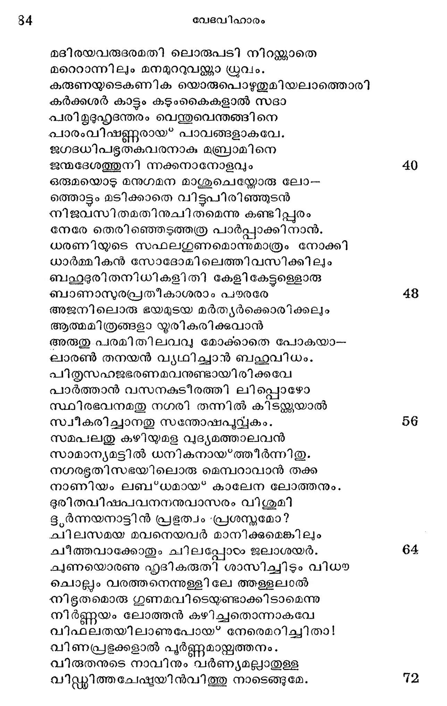
വിതറി ദുരിതാഖ്ൃയയാം വപ*ത്രി ലോത്തിന്നതു
വീക്ഷിപ്പതെത്രയും വിശ്നതാഹേതുവായ്.
വസതി മതില് വഴിയരികകയ്യാലയെന്നിവ
വായിച്ചുകൂടാത്ത വാക്കാല് നിറഞ്ഞപോല്
വളരെജന മനുനിമിഷ മുച്ചലിക്കും സ്ൃതി
വാറോലമൂലം വനോപമമായിതു.
പുരിയമഥ പരിസരവു മാഭാസചേഷ്യയാല്
പൂര്ണ്ണമാംവണ്ണം ഭുഷിച്ചുചമകയാല്
പരരുദുരീത നിധികള ൨൪ ലോത്തിനന്െറ വീട്ടിലും
പുക്കതി പാതകം ചെയ്വാന് തുടങ്ങിനാര്.
സപദി ബഹുവിനയമൊടു ലോത്തുമഭൃഷ്മരില്
സാമാദി മുന്നും പ്രയോഗിച്ചുവെങ്കിലും
ചെറുതുമൊരു ഫലമവനു ലബ്ദമായില്, പിന്
ദണ്ഡം ഗ്രഹിച്ചില്ല ദണ്ഡം ഭയന്നവന്.
ലോത്തു യോര്ട്ദാൻ' നദീതീരത്തേക്കു പോകുന്നു
ഉലകിലൊരു ചെറിയദിശി പോല)മില്യാത്തൊരീ-
യഗ്രമാം പാതകങ്ങഠംക്കു ഭൈഷജ്യമായ*
നിജഹുദയവിപുലതരവൈദ്ൃയശാസ്ത്രത്തിങ്കൽ
നിര്ണ്ണയമായൊന്നു കാണാഞ്ഞു ലോത്തനും
മനതളിരിലയരുമൊരു നിരുപമതരാധിക്കു
മാററമുണ്ടാ മെന്നൊരാശയോടേകദാ
ദിവസകരകരനികരമഴകില് നിഴലിക്കുമ--
ദഭിവൃയോര്ടദ്ദാന്നദി തന്െറ തീരത്തുപോയ*
ചിലഘടികളവിടെ നിനവിൽ ചിലവാക്കിനാന്
ശ്രീലമാം വ്ൃക്ഷച്ചവട്ടിലിരുന്നവന്.
പകല് പരിചിലവസിതിയിലെത്തുമാറുള്ളൊര-
ബ*ഭംഗിയേറും യാമ മാസന്നമാം വിധയ
ചെറുപവനനതി സുഖദ ശിശിരത വഹിച്ചുതന്.
ചേണാര്ന്ന കൈകളാല് ടദുഃഖസംവിഗ്നനാം
നഗരപരി_്ൃഡനുടയ തനുലത തലോടവേ
നാനാവിചാരാഭിഭൂതനായ*ത്തന്നുടെ
ഹൃദയമതി ലപഗയൊടു പലതു മുരചെയ്തിതു
ൃല്ലാസവാനാരു മില്ലാത വേളയില്:
ലോത്തിനന്െറ:വിചാരധാര
അയി! രുചിര! തടലസിത! മൂന്നുഗുണത്തില് നി-
നനാവിര്ഭവിക്കുന്നു ലോകമമ്മട്ട നീ
മലമുകളിലൊഴുകിവരു മുത്സത്രയത്തില് നി-
ന്നത്ഭു തനെന്നറി ഞ്ഞത്ഭുതംമേ പരം
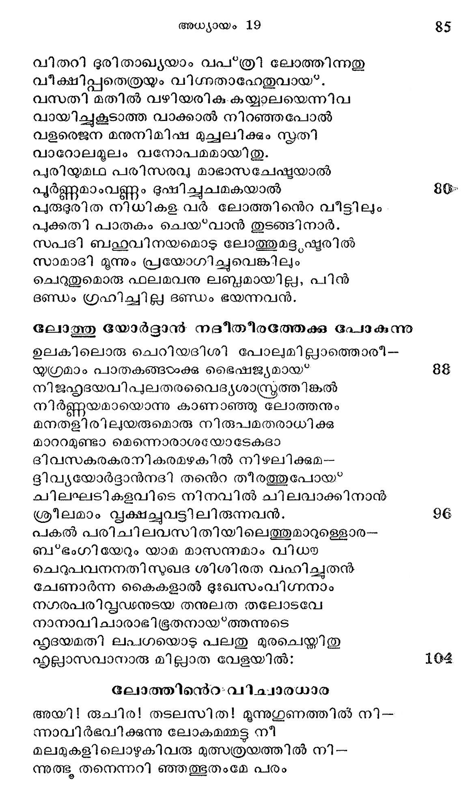
തവ മുൂദുലശിശുത ബഫഹ്കുരമണ മതിലല്പലവും
താപമെന്തെന്നറിയാതെ താൻ മേവി നീ
ഭവദുപരി പടരുമൊരു പാലാശവലു്വികടം
ഭംഗിയില് നിന്തൊട്ടിലായിരുന്നിലയോ !
ഇളവെയിലി ലിനനുടയ പൊന്കരസ്റ്റര്ശനാ -
ലിീന്പമാംവണ്ണം വിളങ്ങിത്തിളങ്ങിയ്ും
ശരദഭതുവി ലഖിലഹൃദയാനന്ദകാരിയാം
ശീതാംശുവിന് പയോഭാസ്റ്റി ലാറാടിയും
ശിവജനക്! ചെറ്ധുനികം ചേര്ന്നു നീ കുര്ദ്ദനം
ശീലിച്ചൊരക്കാല മാനന്ദദായകം.
ചെറുകരട മതിതെളിവെൊ ടാവിഷ്ണകരിക്കുമ --
കൂദ്ധാന്തരംഗനായ്ത്തന്നേ യിരുന്നു നീ.
തവ സലിലമതില് മുഴുകി യൊരുവനു മിറന്നതായ*”
തഥ്യമല്ലാതുള്ള വാക്കുമന്നില്ലഹോ!
രുചിരതരനിഭൂതഗതി തുടരുമൊരു നിന്നുടെ
രാവമെന്താനന്ദ മേകീ ഹൃദന്തരേ.
അരുവിയിതി പുകളിയലു മരുമ നിലയാര്ന്ന നി-
ന്൬ര്ഭകത്വത്തെക്കുറിച്ചുള്ള മര്ശനം
ചെറുതുമൊരു കലുഷമറിയാതുള്ള മാ൯ഷ-
കശെശവ്ശ്രീയേ യനുസ്മരിപ്പിക്കുന്നു.
ചലനഗുൂണ! വടിവിനൊടു ഗിരിതടമിറങ്ങി നീ
ചാലേ കടന്നു നിന് താരുണ്ൃയസന്ധിയില്
അതു പൊഴുതു തടനി ഹിതനുമതരുണി മാര് ഭവ--
ഭാകര്ഷണാത്ഥം നിരന്നു നിന്നീടവേ
പവനകരബലചലിതവീചികം കൊണ്ടു നീ
പാടാര്ന്നവരെ പരിഷ്ജിച്ചിലയോ?
പഴുതിലിഹ നരനുടയ ജീവിതം കാമുക-
ഭാവേ ചരിക്കുകിലെന്തുള്ള സംശയം ?
ഉപനദികളിതി കപടനാമധര്ത്താക്കളേ-
യററബന്പുക്ളായ കൈക്കൊണ്ടു പിന്നെ നീ.
ഇവയിലൊരു നദിയുമീഹ നിന്നോടു കൂടവേ-
യീടാര്ന്നു പോരുമോ സാഗരാന്തംവരെ?
വിമലതരദഹുദയമെഴ മൊററസ്റ്റഖാവി നേ
വീക്ഷിക്ക സാദ്ധ്യമോ? വേഴ സംസ്ഥായിയോ?
കലുഷപഥ മപ്ഥ മിതി കാണിച്ചിടും വിധയ
കണ്ണു ചവത്തുന്ന മര്ത്യര് സഖാക്കളോ ?
വിശദമുഖ! പഴയകഥയെന്തിന്നു പാടുന്നു ?
വിക്ഷിക്ക നിന്നുടെ വാര്ദ്ധക്യജീവിതം.
സുഖ മതുലമരുളി തവ ജീവിതം സമ്മോദ-
സമ്പൂര്ണ്ണമാക്കുന്ന സല്ക്കാലമാകവേ.
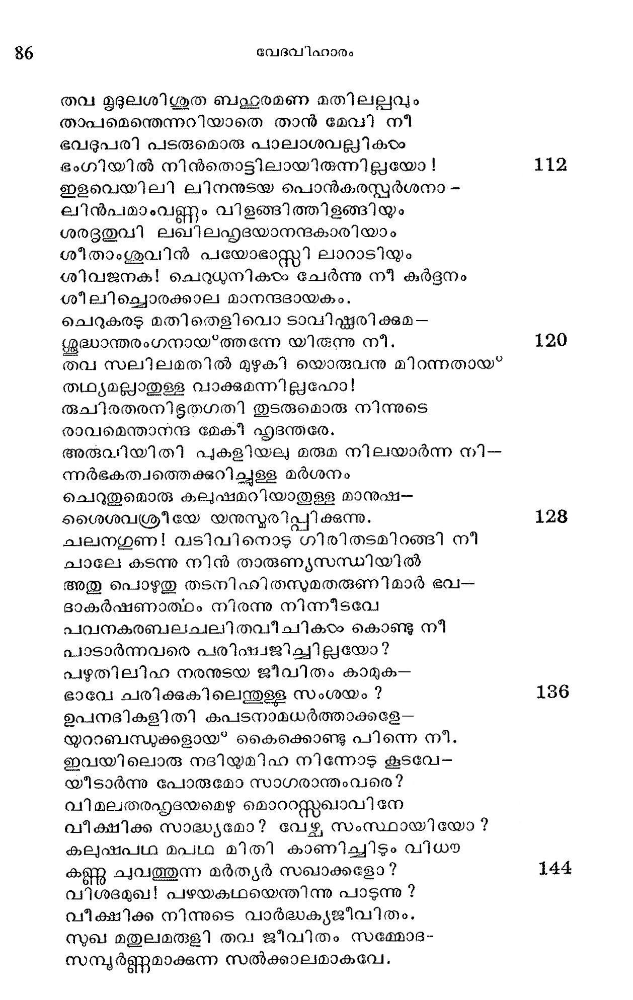
നിമിഷമിടകൊണ്ടുപോയ* സ്വപ്യോഭദനം പോലെ
നീങ്ങി നിന് വെളളമിരുണ്ടു തുടങ്ങിതേ.
തവ ഉഭൂദുളശിശുതയില് വിഹാരരംഗായിതം
താപാപഹം മെറോമെന്ന ജലാശയം. 181
വളരെയകലത്തായി: ഗാലീലിയന് കടല്
വാഴുന്നിടവും നിനജ്ക്കില് ദവിഷ്ടമായ്.
ഗദബലഷഹ്ഥല മായിയുരദ! നിന്നുടെ വാര്ദ്ധകം
ഗണ്യമാംവണ്ണം ജവരാദിസംപീഡിതം.
സവിധമതിലതിഭയടഭ മെന്തുകോക്കുന്നു നീ?
സിന്ധുവിന് ഗര്ജ്ജനമല്പോ യുരോദന!
അനതിചിര മഭിപതിതനാം ഭവാനങ്ങതാ--
ലബ്ദിതാന് നിന് ശവാഗാര മെന്നേന്റ്കുമേ. 160
അയി സുമുഖ! തവ ഗതമതതിദൂുഡമൊടുങ്ങുമെ-
ന്നാരാനു മോര്ത്തിരുന്നൊ നിന് ശിശുതയില് ?
കള രവമൊടൊഴുകി വിഹരിച്ച ലോകത്തിനെ
കാന്തിക്കൊലുമയ്ക്കുടിപ്പെടുത്തിപ്പരം
പലദിശ ജലാപ്പാവകൈതവാൽ;, നാടുകടം
പാട്ടിലാക്കീടുന്ന പാത്ഥിവന് പോലവേ
പുരുമഹിമയൊടു വശഗമാക്കി വാണോരു നിന്
പൂജ്ൃയതയ്ക്കിക്ഷിതി സാക്ഷ്യം വഹിക്കുന്നു. 168
ഇതുസുദ്ദരഡമെങ്കിലും നിന് നാമധേയാര്ത്ഥ-
ഭൂതനിലയിലാക്കുന്ന മട്ടിലധോഗതി
നിജജനനശിഖരി മുതലൂരീകരിക്കയാല്
നീചമാ മിപ്പുദം ലബ്ദമായി ത്വയാ.
മമജനകസഹജനുടെ സംസര്ഗ്ഗഞെട്ടിയില്
മാനസമ്മോദാദിപുവ്വ മിരുന്ന ഞാന്
മദപവനബലസഹിതവാനേന ഭൂഷ്ടയനായ*
മത്തസോഭോം പുരിക്കള്ളില് പതി ല്ചൊരു 176
മരണനിഭചരിതമതു നിന് ഭര്ശനഞ്ഞിനാല്
മച്ചിത്തരംഗത്തെഴുമ്പുന്നു നിര്ഭരം,
ഭവഭുദയഗിരിതടമതിന്നു മൂവായിരം
പാദമടിയിലാണല്ലോ ഭവാനുടെ
പതനമ തസാമാന്യതാഴ*ചയിലാണു ഹാ!
പാതമിനിക്ക് മിവണ്ണമെന്നോര്ക്ക നീ. -
പ്രയതതരജീവനഭൂഷ്യനാ യിപ്പാപി
പ്രസ്സഷ്ടദുഷ*ടരുമായിക്കലര്ന്നതാല് 3184
മലിനകൃതി ബഹുലമിഹ' കണ്ടു മെതിര്ക്കാതെ
മൂര്ച്ചയില്ലാത്ത വാളായിച്ചമഞ്ഞുതെ;
നിജലവണശക്തിയെ വിട്ടാകിലുപ്പിന്നു
നിര്ട്ദിഷ*ടമായള്ള തെന്തൊന്നു നിമ൦നഗേ!
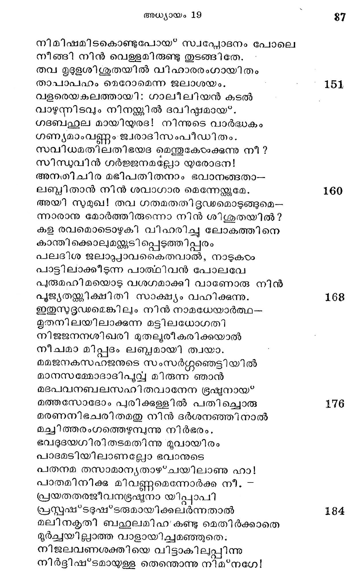
ചിരസമയമതു പിശിതരാജിയിന് ചേക്കിലും
ചീച്ചില് നീക്കീടുവാന് പോരുകില്ലൊട്ടുമെ.
നിലയിലൊരു നിയമ മഹ മംഗീകരിക്കാതെ
നിശ്ചിന്തനായ* വ്യഥാ ജീവിക്കകാരണം
നിടിലതടമതിലൊരടി കഠിനതര മേററപോൽ
നിര്ബോധനായി പ്പ്തി ച്ചേന് സിദോം പുരി
മമജനകസഹജനുടെ നിയമനിഷ്കാദികഠം
മാനാതിലംഘിയായ് പോകുന്നു വെന്നുമെ.
ഹൃദയമതി ലനുനിമിഷമോര്ത്തു ദരവ്യാര്ജ്ജനം
ൃദ്യമായ* ചെയ*വാന് തുടങ്ങിനേ നേകദാ.
ഒരുദിവസ മുരുകലഹ മുണ്ടാകമുൂലമായ'
ഒററതിരിഞ്ഞു പിതൃവ്യനെ വിട്ട ഞാന്
പശുനിവഹധനനിചയഭൂതകഗണയ്ക്തനായ*
പശ്ചിമദിക്കില്നി ന്നിങ്ങോട്ട യാത്രയായ
കല്ൃഷ്മയ നഗരിയിതില് മുഖ്യനായ? പാര്ക്കിലും
കാലുഷ്യമേററം വളരുന്നു മാനസെ
അണുവളവ സുഖമിവനു നഹി നഹി ദിവാനിശം
ആശാരഹിതനായ* ത്തീരുന്നു ഞാന് സഖേ! --
വളവപള വിവ ബഹഥലമുള്ള നിന് യാത്രയില്
വര്ദ്ധിച്ചു ദൈര്ഘ്യം നിനക്കു മുന്നൂററ മൈല്
അളവമിതമാംവിധം ഞാനുമീവക്രമാ--
മധ്വാവിലൂടെ ഗമിക്കുന്നു നിത്യവും.
ഖലഹ്ൃദയഭിഭയിലുരു ഭീതി തോന്നീട്ട ഞാന്
കാഞ്ചനം പിച്ചളയെന്നുരച്ചിടുന്നു.
പകല് രവുൃതാനെന്നു മല്പണ്ണുമാദിയെ
പ്പാര്ക്കുകിലന്തമാണെന്നും വദിക്കുന്നു.
കഠിനരുഷയെ മഹാക്ഷാന്തിയെന്നും ഉഭൃഷാ-
കത്ഥനത്തെ സത്യമെന്നു മുര്ക്കുന്നു.
വിടരുടയ വൃഭിചരണവികൃതി യഖിലം നുഖ-
വിദ്യാവി നോദക്കളി യെന്നു ചൊല്ലുന്നു.
തെറി പറയുമിതിഭിനവു മയ്യോ ഭയന്നിട്ട
തേളിനേ ക്കാള യെന്നോതുന്നു നിസ്റ്രപം
പലവഴിയുമിതിനു പരിഹാരമായ പാര്ക്കിലും
പാഴായ ഭവിക്കുന്നു പാരാതെ സവ്വവും.
തടിനി! തവ പ്ൃഥുചപലഗതി ദൂശി പെടുമ്പൊഴേ
തല്ലരം ത്വല്ലവാതമാര്ക്കു മൂഹിച്ചിടാം.
രഭസതരമൊഴുകുമൊരു മനുജഹൃദയത്തിന്നു
രമ്ൃയമാമന്തം ഭവിക്കയില്ലാകയാല്
അവഹിതമനസ്കൊടും ചിന്തിച്ച ചെയ്യേണ്ട
തത്രേ നി ജായ്യസ്ത്രിലേതും സുപൂരുഷന്.
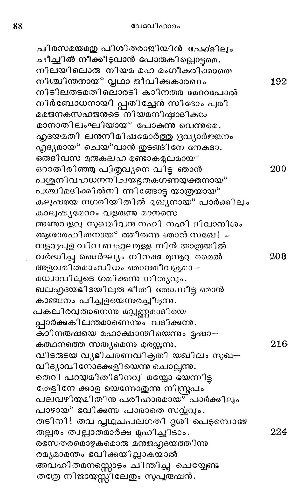
ഗുണമുടയ പിതൃസഹജസവിധമതു സന്ത്യജ്യ
ഗോകങണ്ടക ക്ഷേത്ര സന്നിഭ മാകുമി--
സ്തുഭമപരരി നടുവിലൊരു പരരത്വമാര്ന്നു ഞാന്
സുവൃഥിതാശയനായിരിക്കുന്നിതാ !
അവസിതിയി ലിവനു വരുമപകട മിതെന്തുവാ-
നന്ധകൂപത്തിന്നകത്തു പതിക്കയോ?
അതിഭുരിതനിധികളൊടു കുടിപഴകി വാഴഴകയാ-.
ലഗ്നിപ്രളയത്തിലാണു നശിക്കയോ ?
ഇതിമനസി പെരുതു ഭയമുണ്ടായി ടുന്നതാ-
ലീശ്വരാ! നീ മാത്രമാലംബനം വിഭോ!
പിഴ മുഴുവനഴകൊടു പൊറുത്തു നിന് കാരുണ്യ--
പീയൃഷവര്ഷം പൊഴിക്കേണ മെന്നില് നീ.
ജഗദധിപ! ജനിമരണരഹിത! തവ ഭക്തരാം
ജന്മികടംക്കൊട്ടം ഭയം നേരിടാതഹോ!
സസുഖമിഹ ഭവജലധി താണ്ടുവാനുളെളൊരു
സംക്രമീഥം ഭവാനെന്നതു നിര്ണ്ണയം.
തവ ചരണയുഗവികചനളിനമരഃലുറുന്ന
തേന്തുള്ളി നിത്യവു മാസാദിച്ചുള്ളിലേ
വിവശതകളഖിലമപി ഭൂരീകരിച്ച പിന്
വൈമുഖ്യമാര്ന്നങ്ങനേകസംവത്സരം.
സിദുമപുരിമരുധരയിലങ്ങുമിങ്ങും പരം
തിണ്ടാടി ഭഗ്നമനോരഥനായിതാ
തിരുസവിധ മണയ്യമൊരു മധുകരമഹം മമ
തൃട്ടം ക്ഷ്മധയ്ം ശമിപ്പിക്ക ശര്മ്മദ !
വ്രജിനഗണമഥനചണനിജമഹിതഭാഷിത-
വ്രാത! സംശുദ്ധഹൃദയനി കേതന!
വിഷയവിഷജലനിധിയില് നീന്തുവേരൈന്നെ നീ
വീണ്ടുകൊള്ളേണമേ കാരുണ്ൃവാരിധേ!
പലതുമിതിനിജ മനസി നിരവധി നിരൂപിച്ചു
പാരം സമയം കഴിച്ചു നിവിണ്ണനായ്
തദനു, ബഹല്വമനനമയ നിദ്രയില്നിന്നത്-
താന്തതയോടണര്ന്നിീടും ദശാന്തരേ
യ്യരദനനഭീശ്വരന് വാതപോതച്ഛലാല്
സ*ഫുരിതനിജദുഃഖനായ നിശ്വസിക്കുന്നതും,
ദിനകരമഹേശ്വരന് സിന്ധുപ്പഷ്പം വെടി --
ഞ്ഞനുപമതരാധിയാലെന്നപോല് ഭാനനായ*
ചരമഗിരിസാനുവാം ചാരുഹര്മ്മ്ൃയത്തിലേ--
കരുതരജവത്തൊടും യാത്രയാകുന്നതും,
പലവിധപതത്രികടം പാരിന്നുമേല് തമ--
സ്ണലഘുതരമാപതിക്കുന്നതായ? കാണ്കയാല്
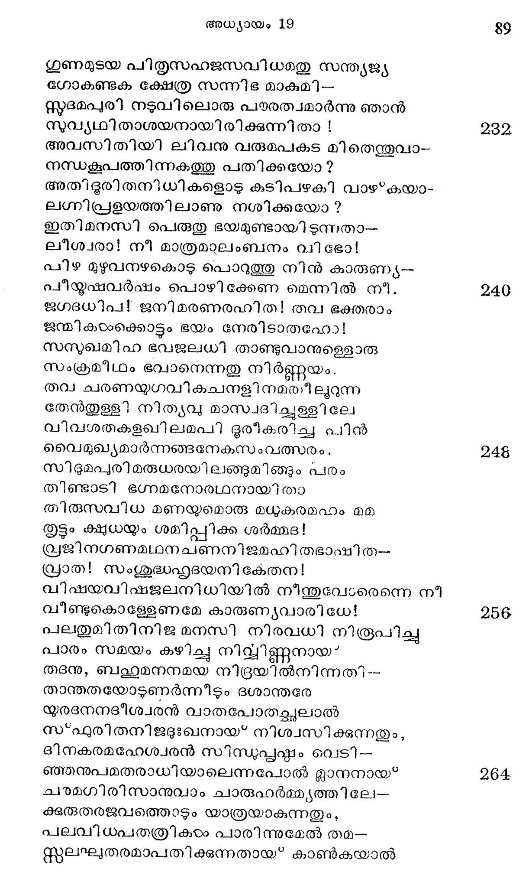
മനമുരുകി യോരുതം വര്ഷിപ്പതെന്നക ന
ക്രളിലതിശങ്കയിങ്ങാര്ക്കുമുണ്ടാംവിധം
മദരഹിതനിനഃദമൊടു വിപിനഭവി നിലക്കുന്ന
മാമരശാഖമേൽ ചേക്കയേറുന്നതും,
അജപഗണഗള ഗളിതനാദം ശ്രവിച്ചുകൊ--
ണ്ടാജകം മേച്ചില് സ്ഥലങ്ങളില് നിന്നഹോ!
നിജഗമനസരണിയതില് നിന്നു തെററാതതി
നിശ്ശുബുവഘോഷം നിരന്നുപോകുന്നതും,
മനതളിരിലൊരു സുഖവുമില്ലാത്ത ലോത്തനാം
മാനവന് കണ്ടു സുദപ്യോത്ഥി തന്പോലവേ.
ത്വടുതിയെഴനീററവന് യാമിനിതന് തമോ--
ഘടയിലതിഭീഷ*മമാം പാപകൃത്യങ്ങളെ
തിടമൊടു നടത്തുന്ന സോദോംപുരത്തിലേ --
ക്കിടര്മനസിവാച്ചു മന്ദം നടന്നീടിനാന്.
സോഭോം നഗരത്തിലെ രാത്രികാലം
ഒരു തെരുവിനിടവഴിയിലൂടെ കടന്നപോ--
തൊന്നിച്ചു കണ്ടാനൊരുതരം വങ്കരെ
തലമുടി മി൯ുക്കിയ്യം ഗൃശ്ര നറുക്കിയ്യം
ലളിതതരശ്ംഖലം മഭ്ധെ മുറുക്കിയ്യം
വിലപെരുകമാടയാലാപാടദമനുകം
നലമൊടുമറച്ചു നല് ഭാസം പെരുക്കിയും
കരവിധ്യതലഗുഡമതു മുഹുരപി ചുഴററിയ്യം
കണ്ടമാനംപേശി ദന്തം കഴററിയം
വസനമതിനരുളി യൊരു വാസയോഗത്തിനാല്
വാതം സുഗന്ധപരിപൂര്ണ്ണമാക്കിയും
രസികജനമടിപണിയ മണിമകുടമര്തൃരായ"
രാത്രിഞ്ചരരായ* നടക്കുന്നി തായവര്.
അതിനുലവമപ്പുറം ചെന്നപോതുണ്ടു നട
പൃശനഗ്രഹമായതിലുൂണും കഴിഞ്ഞിതാ
വിലയതു കൊടുക്കാതെ ചാടിയിറങ്ങുന്ന
വില്ലികരം കൂട്ടംവിടലച്ചിരിയുമായ*
ഇതിനെതിരിലൊരു വലിയ മദ്ൃഷാപ്പുണ്ടതി-
ലേതാന് വിദഭ്ധര് കുടിച്ചുമറിഞ്ഞഹോ!
തലയിലൊരു വെളിവു ലവമില്ലയാതെ പാത്രങ്ങംം
തട്ടിത്തകര്ത്തു പുറപ്പെടുന്നത്ഭുതം.
ഉടനടിയിറങ്ങുന്നു ഷാപ്പുകാരന് മഹാ
കൊടിയ ചുടുവാക്കോതി യോടിയെത്തിട്ടവന്
വലിയ വടി തന് കൊടും കൊണ്ടകൊണ്ടാക്ഷണം
തല പിളരുമാറടിച്ചിടിനാന് നിര്ഭയം.
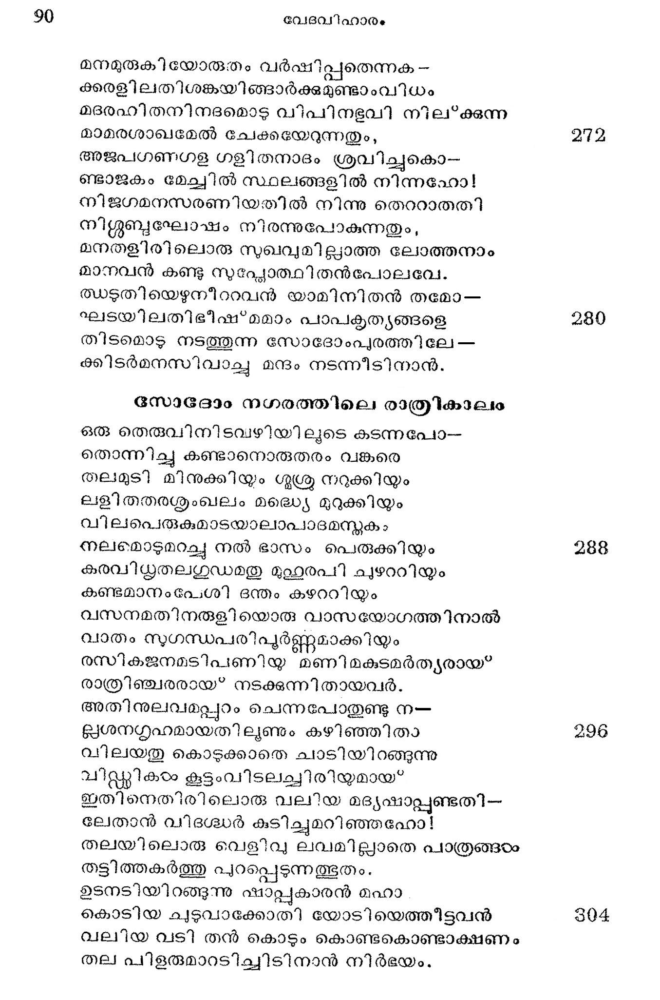
കുറയ വഴിയകലെയവനെത്താനടുക്കവെ
ക്ടക്കായി ഭീമനിലവിളി മുന്നിലായ
ഒരു മനുജഗളമുടനറുത്തു ചോരപ്പഴ--
യോളപ്പെടുമാറൊഴുകക്കുന്നു കഷ്ടമേ!
വഴിനടുവിലുണ്ടിതാ ഘാതകന് ധൈര്യമായ*
വാളോടകൂടി നിലക്കുന്നു നിരാമയം. ര
കലഹമിതു കമനിയുടെ കാരണം വന്നതായ
കുണ്ടോരുരജ്കകുന്നു കാറിന്യമെത്രയ്യം
കലിയുടയ സിരനിരയയണര്ത്തുന്ന സത്വമാം
കാമമേ! നീയെന്തു കാട്ടന്നതില്ലിഹ ?
കഠിനതരകൃതികളിഹ ചെയ്തുകൊടംവാന് നിന്െറ
കൈകംടംക്കറപ്പില്ല കാളായസാത്മക!
നികടഭവി ചടുചട നിനാദങ്ങടം കോംക്കയാല്
നോക്കിനാന് ലോത്തു തട്ദിക്കിലേക്കക്ഷണം ൫20
നിരയിലൊരു ശതകഗ്ൃഹഗണമനലഭക്ഷ്യമായ"
നിന്നു കാളന്നൂ ഭയങ്കരജ്വാലയാ.
മനുജരഥ പലവഴിയി ലോടി പ്പദാത്ഥങ്ങഠം
മാറദുവാനാവും വിധം ശ്രമിച്ചീടിലും
അതികഠിനമായഗ്നി കത്തിജ്വലിക്കയാ--
ലാര്ക്കു മടുക്കാന് കഴിയാതെ നിര്ഭയം.
വിലപെരുക മരിയവകയെല്ലാം ദഹിച്ചതില്
വീട്ടകാരും പലര് പട്ടുപോയ* കഷ്ടമേ. 28
ഘ്ലണ മനസി യണുവു മിയലാതുള്ള തത്രത്യ
കണ്ടകന്മാര് ചെയ്ത ശൂണ്ണിയാ മിക്കയതി
ഹൃദയമതിലധികതര ദുഃഖപൂവ്വം കണ്ടു
ഹാറന് സുതന് തനെറ വീടു പുക്കര്ടിനാന്.
ഒരു വചനമവരോടവ നോതിയില്വാ സ്വയ-
മൊററയാളെന്നുള്ള പേടിയാലെങ്കിലം.
സകലജഗദധിപനതിനര്ഹമാം ദണ്ഡനം
സാമര്ഷമേക മെന്നോര്ത്തടങ്ങീിടിനാന്. 336
ഭൂതന്മാര് സോദോനേഗരത്തില് എത്തുന്നതു"
ഉളരപെരുക മജചരണ മാരാധനം കഴി -
ചുററസതയ്തുഷ്ടിയില് പാത്തൊരബ്രാമിന്െറ
സഹജനുതനായ ലോത്തേകദാ സന്ധ്യയില്
സംസ്ഥിതി ചെയ്ത പുരദ്വാരീ പുണ്യവാന്
ഇരുവിബുധ രതിരഭസ മവിടെ യെത്തിടിനാ-
രീശ്വരന് തന്ദൊ നിയോഗാനുസാരമായ'.
നിജമഹിതവിഷ്*ടരം വിട്ടടന് ലോത്തനും
നിര്മ്മല ഭക്ത്യാ വണങ്ങിയട്ദ, തരേ. 344
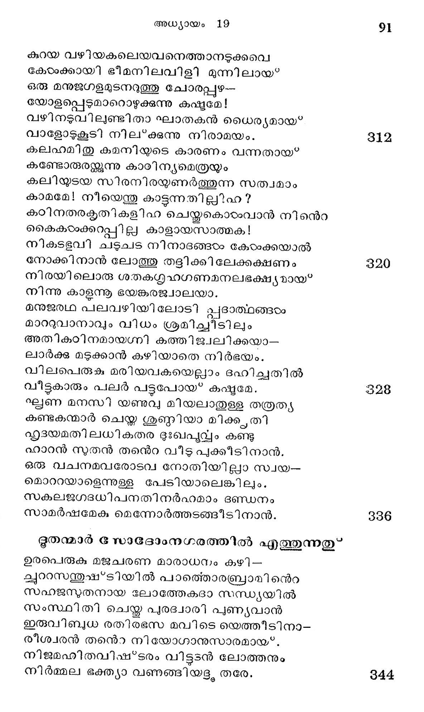
വചനമിദമുക്തവാന്: കര്ത്താക്കളേ! നിങ്ങഠം
വാസമായംഗീകരിപ്പിന് മമാലയം.
ചരണയുഗപവനവിധി യദനശയനങ്ങളം
സാധിക്ക മെന്നുടെ സത്മനി നിര്ണ്ണയം.
ഉഷസി പുനരതികതുക മുത്ഥായ യാത്ര ചെ
്കട്ദിഷ്ട ദിക്കില് സമാശ്വസിച്ചീടലാം.
ഇതിന മരരതിചപല മുത്തരിച്ചാർ: ഞങ്ങ -
ളിന്നു രാത്ര വസിച്ചീടുമീ രഥ്ൃയയില്. 882
ഹരണസുതനുടനുഴറിയോതിയെന്നാലതു
ഹൃദ്ൃയമല്ലേതു മനുവാദ്യമല്ല മേ.
മമ ഭവനമതിഥിജനപൂജന്റ്റ കൊള്ളാത്ത
മന്ദിരമെങ്കിലോ നിഷ്ഫലം മജ്ജനി
വിശദപടദപതനമുദവസിത മതിനേകായ്ക്കില്
വീഥിയില് ഞാനും വസിക്കും വിഗേഹനായ്.
വിശിഖയിതിലൊരുനിമിഷ മൊരുവരു മഹോ രാത്രി
വിശ്രമിക്കില്ല വിനോദാത്ഥമാകിലും. 60
വിരുതുടയ വിമതരുടെ വികൃതി പലതാകയാല്
വിട്ടേക്കുമോയിവന് നിങ്ങളെ വീഥിയില് ?
പുരുവിനയസഹിത മിതി നിര്ബന്ധബുദ്ധിയായ*
പൂജ്യനാം ലോത്തന് പറഞ്ഞളവായവര്
ഉഴറി ഭവത്തനത്തിലേക്കാശ്രിതാഭീപ്പിത-
മുല്പംഘനം ചെയ*വതീശനും ദുഷ്കരം.
നഗരജന ഹൃദയഭവി തിങ്ങും തമോ ഗുണം
നന്നായ* പുറത്തും വഴിഞ്ഞ വിധത്തിലായ* 968:
അവനിയുടെ വിപുലതര പൃഷ്ടപഭാഗം മറ-൦
ചക്വാശാതിവത്തിയായ? നിന്നുതാമിസ്രരവും.
പുതിയജന മിരുവരഥ വന്നെത്തിയെന്നുള്ള
പുത്തനാം വാര്ത്തയാൽ പത്തനവാസികംം
പുരുമദമോടവിടെയൊരു സംഘമായ കൂടിനാര്.
പുംമൈഥുനത്തിന്നു കാപ്പുകെട്ടി ക*ഖലര
ഗൃഹനികട മതിലവരണഞ്ഞറിയിച്ചാത്മ--
ഗര്ദ്ധനം ഗേഹാധിനാഥനെ സത്വരം. 372.
ഇവരുടെ ഭയങ്കരം നിശ്ചയം ലോത്തന-
ങ്ങവികല മറിഞ്ഞപോതെത്തിതന് ചത്വരെ
അവനുടനുരച്ചിദം: മാന്യമാലോകരേ!
സുവിഹിതമതോ ഭവല് കൃത്യമോത്തീടുവിന്
മമഭവന മിതിലതിഥി ഭാവം ഭരിക്കുമി--
മര്തൃരേ നിര്ബന്ധ മുക്തരാക്കീടുകില്
പ്രച്രമദ ശോധനത്തിന്നു കന്യാദ്വയം
തരുവനതിനാല് നിങ്ങരം തൃപ്നരായീടണം. 884
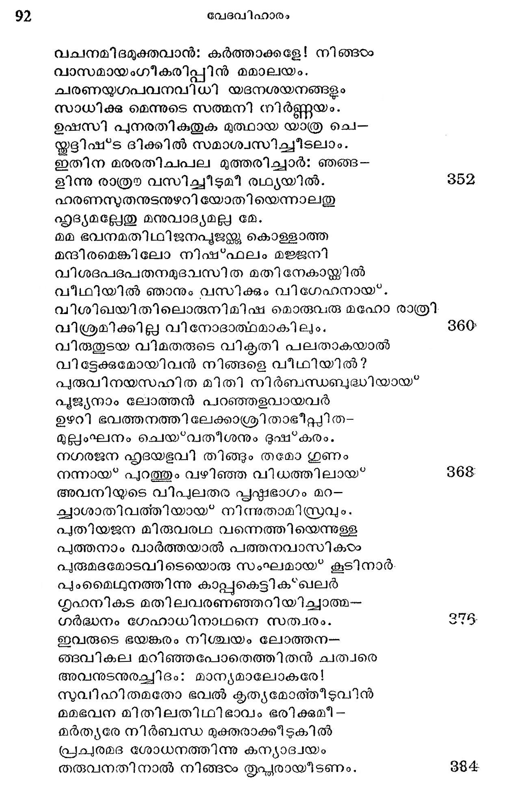
ഇതിജരിത നുദവന്ധിത കതകുകളടച്ച കൊ-
ണ്ടോതിനാന്; പഴയരര് കഥിച്ചേവ മുത്തരം:
അകലെ മറയത്തു പോ! വൈദേശികന് ഭവാ--
നധികൃതി ലഭിക്കുമെന്നോര്ത്തി ടേണ്ടത്ര നീ.
നുഭമനഗരാഡ്യരെ സൂപദേശം ചെയ്യു
മതി വികൃതിയാം നിന്െറ വിടിളക്കും വയം.
തവ ഗൃഹമതില് വന്ന മര്ത്യര്ക്കു ചെയ്യുവാന്
കരുതിയതിലപ്പുറം നിന്നോടു ചെയ്തിടും
ഭണിതമിതുവിധമുളറി പയരരെല്യാവരും
പാവമാം ലോത്തിനെത്തിക്കി ഞ്രുക്കി നാർ.
തദനുഗൃഹമതിനുടെ പ്രതീഹാരഭങ്ജനം
സാധിപ്പതിന്നായടുത്താ രശങ്കിതം.
ത്രിദശവരരതുപൊഴുതു കൈനീട്ടി ലോത്തിനെ
ത്തിണ്ണമകത്താക്കി രോധിച്ചി തര്ഗ്ഗളം-
ബലമിയലുമമരരഥ പരരാക്ഷി കയാക്കതി
ബാഡമാമാന്ധ്യം വരുത്തിയ ഹേതുവാല്
ഇരവിലവര് ജരം ഗൃഹവാതില് കാണ്മാന് മുഹു--
രങ്ങുമിങ്ങും തപ്പിനോക്കി നടന്നുതേ.
നിഖിലഭുവനാധി ഭത്താവിന് നിയോജ്യരേ
നിന്ദചെയ്യുന്നവന്നുണ്ടോ സുഖം ഭവി ?
അപിചസുരവരൃരീവണ്ണ മോതീടിനാ-
രാറന്നുതാ! നിനക്കുള്ള ദായാദരേ
സപദികുടിനീക്കുകി പ്പാപപൂരില്നിന്നു
വിപടദമുള വാക്കുമി പ്പട്ടണത്തിന്നുടന്
ഇതിനുടയ കലുഷഭരകാരണാല് സാധുക്ക-
ളീശനേ നോക്കി വിളിച്ചു കരയുന്നു.
പുരമിതു വിപാടനം ചെയ*വതിന്നാണെടോ
പരമിവിടയച്ചതും ഞങ്ങളേ യീശ്വരന്.
അമരവരവചനമതു കേട്ടിട്ടു ലോത്തനു--
മാത്മജാമാതാക്കളാകുവാനുളെളാരു
പുരുഷരുടെ നികടഭവി ചെന്നിട്ടരച്ചിദം:
പുഷ്യമോദം പോക പട്ടണം വിട്ട നാം.
നികൃതിയുടെ ബഹുലതനിമിത്തമി പ്പൂരിന്നു
നിര്മ്മ ലനാശം വരുത്തും പരേശ്വരന്
മതിയിലതി ദുഃഖമോടേവ മോതുന്ന ലോ--
തആതുലിതപരിഹാസിയെന്നു തോന്നീട്ടവന്
ചിതമൊടു ഗണിച്ചതില്ലോര്ക്കില് മൂത്യംഗത--
ക്ഭതവിയ്ള വാകുമോ സിദ്ധാഷധത്തിനാല് ?
ഉഷസി സുരരുത്ഥായ ചൊന്നു ലോത്തോടി ദം:
വിഷമതരനാശമുണ്ടാകം പുരരിക്കതാല്
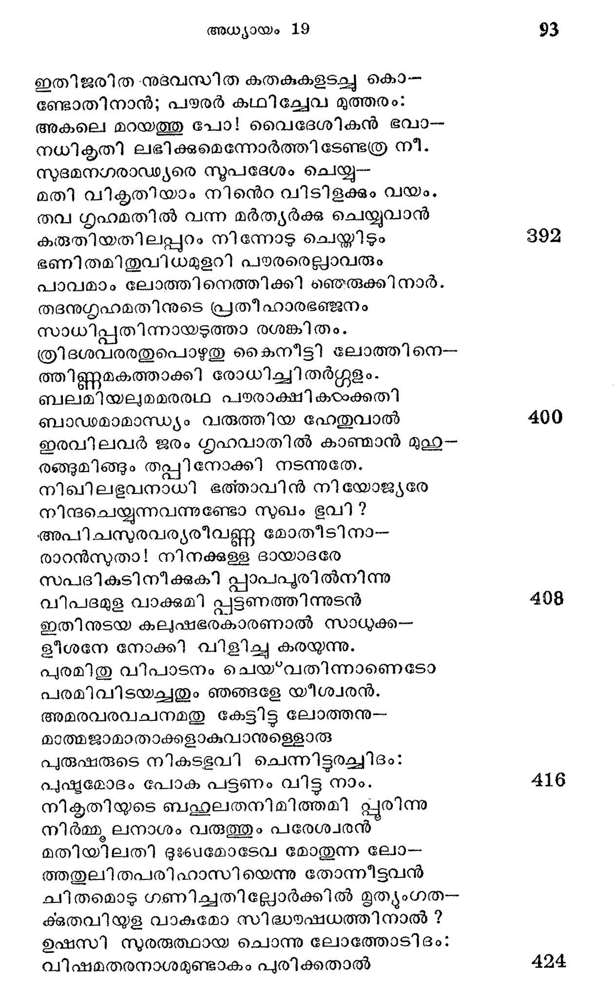
ടസാഭോം ഭഹാനം
അതിഥിജനഹേളനം ചെയ്*വാനൊരുമ്പെട്ട
ചതിയ രമരാഗ്രയരിന് സാധുവാം ശിക്ഷയാല്
അനുപധി വലഞ്ഞുപോയ* വീട്ടിലെത്താനുള്ള
വഴിയുമറിയാതെയായ* വൈവശ്യമാര്ന്നിതു.
അഭിലഷിത മണുവളവുമൊത്തതില്ലെങ്കിലും
അഭയ വേശ*മപ്രാപ്ഛി മാത്രം കൊതിച്ചിതാ
പലവഴി നടക്കുന്നു പാതവി ട്ടോടയില്.
പലരഥ പതിക്കുന്നു കള്ണുകാണായ*കയാല്
നിജസരണിയെന്നുറ ച്ചന്യദിക്കിന്നുള്ള
പദവിയില് നടക്കുന്നി തേതാനുമാളകരം.
ഭവനമതു തെക്കിലാണേകനെന്നാകിലം
തിടമൊടു വടക്കോട്ട പോകുന്നു ഭോഷനായ*.
മനമതിലൊരുഹമുണ്ടെന്നുരച്ചന്യനോ
വസതിയൊട്ക്കവേ ചാടിനാനന്ധുവില്.
അപരനഭിമാനിയാ യാന്ധ്യമെന്തെന്നോത്
മുഖമതുതകര്ക്കുന്നൊരത്താണി മേലുടന്.
നിജഭവനമെന്നോര്ത്തൊരന്യ വീട്ടിൽ ചെന്ന
കുരുടനു കിടച്ചേറെ മര്ദ്ദനം നിര്ദ്ദയം.
അകിഴു മര മത്താണിയെന്നിവയ്ക്കുളളൂക്കു
സാവകമവയവങ്ങളില് തട്ടിച്ച നോക്കിയും
സദനമതിലെത്തുവാന് സാധിച്ചിടാതെയും
വഴിയില് ഗതിഹീനരായ നിന്നുപോയേവരും.
ദിവിചരരോടതിവികൃതി ചെയ*വാനൊരുമ്പെട്ട
ദൈവശിക്ഷ വശംവദരാകയാൽ
വിഗതസുഖഹൃദയരവര് വല്വപാടും ചെന്നു
വീട്ടിലെത്തീടുകില് ഭാഗ്യമെന്നോര്ത്തുതേ.
നിശവളരെയാകലേ നാഥരേ ക്കാണാഞ്ഞു
നിധുവനരസജ്ഞമാര് നേരേ പ്റപ്പെട്ട
ഗതനയനരായ? വെറും കുററിപോല് നിന്നിടും
മനുജരെ ഗൃഹത്തിലേക്കാനയിച്ചാര് ദ്രതം.
ശരണഗത രതിനുഖദശയ്യയേറിീടിലും
ശാന്തമായില്ല മനഃക്ഷോഭമല്വവും
സ്പനമതുകൂടെയും മാറിനിന്നിക*ഖലര്
സ*ഫ്ൃശൃരല്ലെന്നുള്ള ചിന്തയാലെന്നപോല്.
ഭയജനകരജനിയിതു വിധമവര് കഴിച്ചിട്ട്
ഭാനുദയത്തിലുണര്ന്നു കൊള്ളംവിധയ
ഭുരിതചയദഹനനുടെ കീലയാല് ഭൂതലം
ചുട്ടുപൊട്ടി ച്ചൊര സ്റ്റോദോംപുരിക്കമേല്
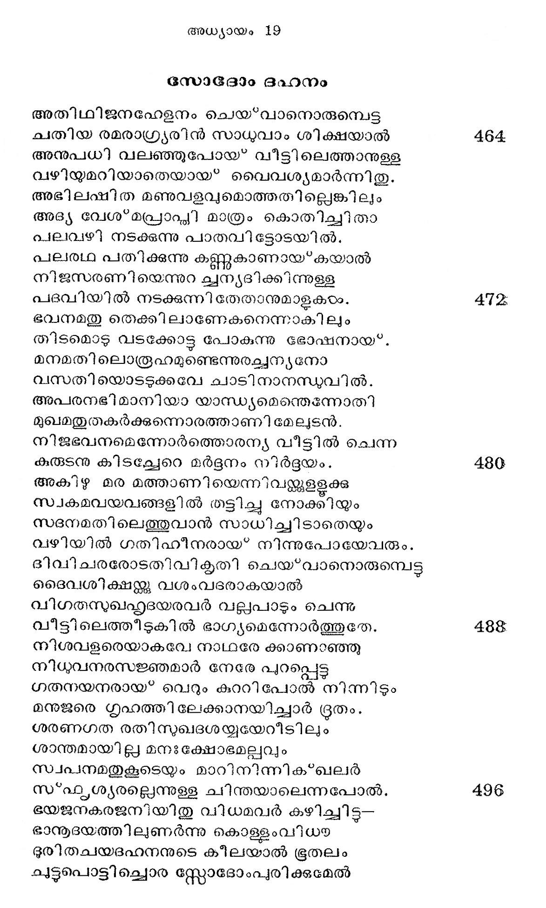
ഗതകരുണമഖിലജഗദധിപതി നഭസ്സ് ന്നു
ഗന്ധകമഗ്നിയും വര്ഷിച്ചു ഘോരമായ.
ഗഗനപഥമിതിനുടയ നാന്ദിയായിട്ടഹോ!
ഗംഭീരശബ്ദം മുഴക്കി ഭൂവെങ്ങുമേ.
ജലനഘനഘടകളടെ നടുവി ലിടിവാളകടം
ജാതരോഷം പരന്നാകാശവീഥിയിൽല്
പ്രളയമതി ലുയരുമൊരു ചണ്ഡവാതങ്ങളം
പ്രത്യല്ക്രമിച്ചു നിഷ്പ്രതയൂഹമാം വിധം
നിമിഷസമയംകൊണ്ടു ദിവ്യാശൃുശൂക്ഷണി
നിമ്കൂളിച്ചംബര ദിക്കില് നിന്നക്ഷണം.
വലിയ നിലയങ്ങളും വന്മാളികകളം
വന്പരാം പയരരിന് തുംഗനിവാസവും
വിപണികളിലതിനിബിഡ മുയരുമുരുശാലകടം
വിന്ധ്യാദ്രിയോളം കിളര്ന്ന വന്മേടകടം
പ്രചകളൊട മഠനികരമട്ടഭേദങ്ങളും
പ്രാസാദസൌധങ്ങടം വേശ്യംഗ്ൃഹങ്ങളും
കനകമണിമയനിലയനിചയനിബിരീസമാം
കാശംപീന്ദ്രന് തന്െറ കാന്തോപകര്യയം
വിഷയപരവിഷയശതമതിനിശിതബദ്ധിയാം
വിജ്ഞാനമൂഷയില് വച്ചുരുക്കിസ്സദാ
വിഹിതനിജകൃത്യരായ* മന്ത്രികഠം പാര്ക്കുന്ന
വിസ്മാരമേറും വിനോദ ഹര്മ്മ്യങ്ങളും
സ്ഥപതിഗണ മയസിപണിചെയ്യുവോര് ത്ര്രികര്
സ്വര്ണ്ണുകാരന്മാര് കുലാലപ്വന്ദങ്ങളും
രജുകനഥഗാംഖികന് തന്തുവായന് ക്ഷൂരി
രസികജനരത്തമാം ചിത്രകാരന് കവി
വിരുതുടയ വൈണികന് മാലികന് സെഴചികന്
വിദ്യോപജീവിയുംമായീ കശീലവന്
ഇതിബഹുല തൊഴിലുകളി ലേര്പ്പെട്ടിരുന്നിട-
മീദൃക്കുകഠംക്കളള ധിഷ്ണ്യോല്ക്കരങ്ങളും
പണിപെരുതു പറയ്യവതി നഖില നിലയങ്ങളം
പാവകന് ഭസ്മീകരിച്ചു വീഴ്ത്തീടിനാന്
നഗരജന മധി കതര മലറി വിളികൂട്ടിനാര്
നാശം തലയില് കരേറിയ കാരണാൽ.
ജ്വലനനുടെ ശിഖകളതി വേഗമായ* പാഞ്ഞുടന്
ചാടിപ്പിടിച്ചു മര്ത്യോല്ക്കരടത്ത ഹാൽ
മുടിവസന മിവയിലരമെത്തി ജ്വലിക്കയാല്
മൂടിപ്പരന്നുതേ മേനിമേലനഗ്നിയും
നിലവിളി തുടങ്ങിനാര് സോദോമ്യരമ്പര-
നതി വിവശമോടിനാരങ്ങുമിങ്ങും ശുചവാ
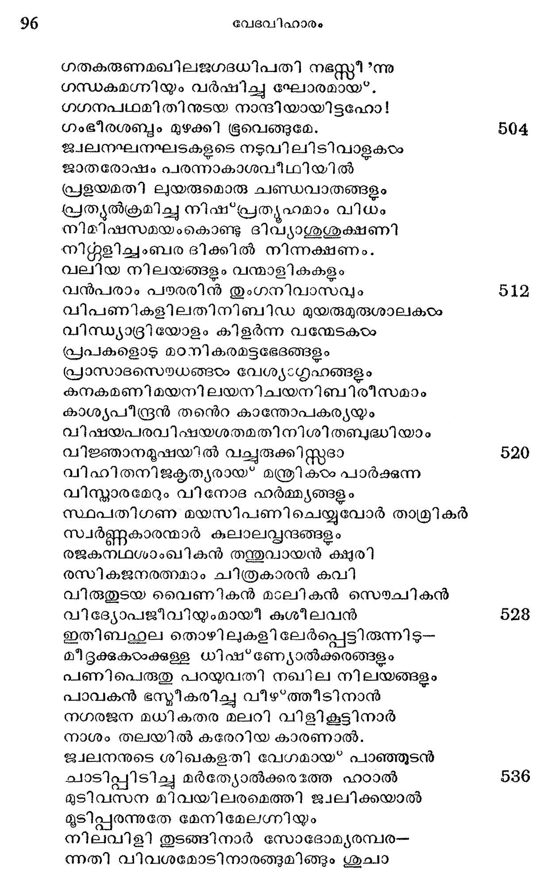
ഭഹനശമനത്തിനായ* വാപിയില് ചാടിയും
ഫലമണുവുമെന്നിയേ വെണ്ണീറടിഞ്ഞുപോയ്.
അജിരമതില് നിന്നവര് തിണ്ണയില് കേറിനാ
രൂുപരി നിലകൊണ്ടവര് തട്ടിന്നു കീഴിലായ?
അതുമഫലമാം വിധ ജീവരക്ഷാത്ഥമായ*
നിലവറ കടന്നിരു നാഗ്നേയപീഡയാല്.
ഒരു വിധവുമനലശമമുണ്ടായതില്ലെങ്ങു--
മെത്തി ജ്വലനന് ദഹിപ്പിച്ചു പത്തനം.
ബഥഹ്ഥലതര തൊഴിലുകഠം നടത്തുംവിധാ പലര്
വെന്തുവെണ്ണീറായ* ചമഞ്ഞു പൊടുന്നനെ.
ചില നരര് ഭൂജിക്കവേ, കേചിൽ സ്വപിക്കവേ,
ചീത്തവാക്കോതി ചിലര് പ്രധര്ഷിക്കവെ,
മദനമഹ മതിനു ചിലര് മത്സരിച്ചോടവേ,
മദ്ൃയകംഭം ചിലര് കയ്യിലെടുക്കവെ,
പകിടകളി പടിമവളര്പാശി ചുതെന്നിവ
പാരമുത്സാഹമായ? കേചില് കളിക്കവെ;,
വലിയൊരവകാശ വാടദസ്ഥാപനത്തിനായ?
വാടം വടി കേചില് കരത്തില് ധരിക്കവെ
കൃവണര് നിജ പിടകമതിലള്ള നാണ്യം തൃഷാ
കൃത്യമായെണ്ണി ക്കണക്ക് നോക്കീടവെ,
ഗഗനതല മതിപരുഷ മഗ്നിയും ഗുവ്വിയാം
ഗന്ധകപ്പാറയും വര്ഷിച്ചു മൌലിയില്.
വിളവിലൊരുതരവു മവശിഷ്ടയമാകാ തഗ്നി-
വീണു നശിച്ചപോയ് സസ്യധാന്യാദികടം.
യവമപിച കോതമ്പു ചോളം ചണം മല്ലി
ജീരകം നാരകം ഗോന്യനീവലുവികഠം
ഒലിവുമര മത്തിയ്യം ടേവദാവ്യാദിക--
ളൊക്കെ ദഹിച്ചു ഭസിതമായഃ്*ത്തീര്ന്നുതേ.
തുരഗഖരമയഭഷകമഹിഷ ൮ൃഷഭാദിയാല്
തുന്ദിലമായുള്ള നാട്ടമ്പുറങ്ങളും
ഹരിണമൊടു പുലി കരടി കാട്ടാട ജംബുകം
ഹര്ക്ഷമെന്നിവ തിങ്ങും വനങ്ങളും
പരിചൊടു നശിച്ചുപോയീടദ്ദശം പത്രിണാം
പാളിയും വെന്തുതുലഞ്ഞുപോയ* കഷ്യമേ.
നിഗമ മിതു നിഗമമതിനരിതനിതരാം പേറി
നര്മ്മ ലനത്തിന്നടിപ്പെട്ടിതേ വിധം.
സുദമരുടെ നഗരി ബത ചുട്ടോരു നേരത്തു
സന്ദശ്ധമായ*വന്നു ലോത്തിന്കളത്രവും
ഭ്രവണമതിലിടയിലവര് പിന്നോട്ട നോക്കാതെ
ധാവനം ചെയ്വാന് കൊടുത്തോരനുജ്ഞയേ
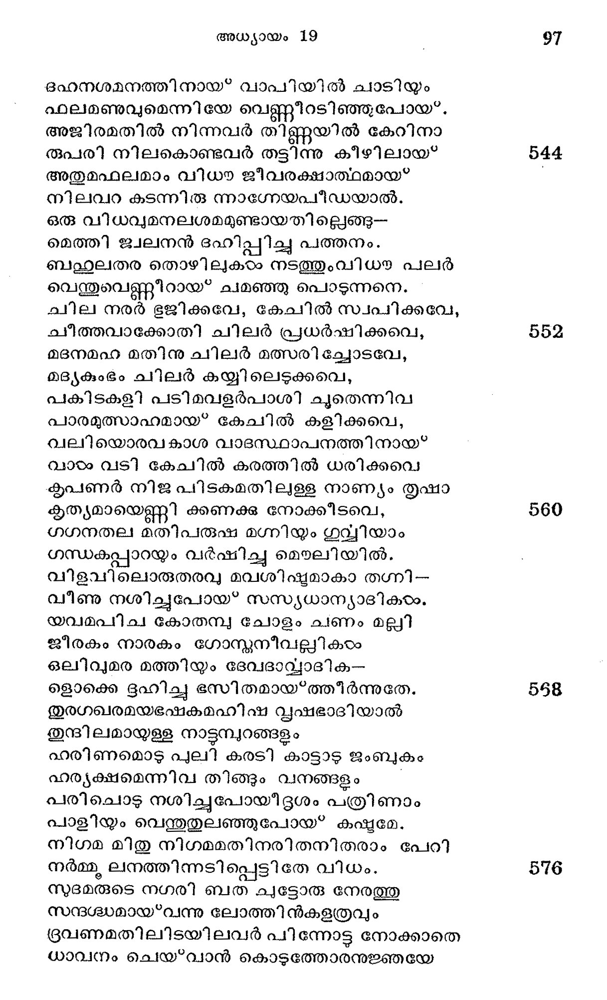
മനസി വിഗണിച്ചു വീക്ഷിക്കയാലായവഠം
മാനുഷത്വം നീങ്ങി യുപ്പുതൂണായിതു.
വിഷയവിഷസര്പ്പമേ! നിന്നെ വിട്ടോടിലും
വിദ്രതം നീ പാഞ്ഞു ദംശിപ്പു മര്തൃരേ.
മഹിളയുടെ മനതളിരിലമിത വിഷയാശ താന്
മാരണഹേതുവായ് മങ്ങിക്കിടന്നതും.
വൃടയമതിലണുവളവു ലിപ്പയങണ്ടെങ്കിലോ
സംയമിതാനും സഃഖലിക്കും സ്വനിഷ്ഠയില്.
മുനിയുടെ മനം കരങ്ടൂര്ദ്ധ്വമാക്കീടുന്ന
മൂഷികനത്രേ വിഷയാശ നിര്ണ്ണയം
ദഹനനെ യശിച്ചിടാം വിസ്മാരമേറുന്ന
ജലനിധി കുടിച്ചിടാം ക്ഷോണീധരത്തിനെ
കരമതിലെടുത്തിടാം മാനസത്തിന് യമം
പെരുതു പണി സാധിച്ചുകൊടംവാനസംശയം.
മണലഖില മെണ്ണിടാം ചണ്ഡവാതങ്ങളെ
കയറതില് നിയന്ത്രിച്ചു കെട്ടി നിത്തീടലാം
ഹൃദയവ്വക്ഷഭത്തിനെ സ്റ്റംയമിക്കുന്നതില്
പെരിയപണിയെന്തഹോ! മാനുഷര്ക്കിബ*ഭൂവി.
നഗരിയതിലതികുതുക മാര്ജ്ജിച്ച സ്വത്തുകടം
നാരീമതല്ലിക യോര്ത്തനേരം തൃഷാ
പരവശത പെരുകിയവടം പിന്നോട്ട നോക്കിനാരം
പാപഹന്താവിന് നി ദേശ മോര്ക്കാതവടം.
മനുജരിതുവിധമഖിലജഗദധിപവാക്കിന്നു
മാറുപാടായ പ്രവര്ത്തിച്ചു നശിക്കുന്നു.
ഉഷസി നിജശയനമതില് നിന്നെണീററബ്രഹാ-
മുററു കിഴക്കോട്ട നോക്കും ദശാന്തരേ
സുദമപുരിദിശയിലിത ധുമസംഘാതകം
സുഷ്ഠവായ്' മേലോട്ടയരുന്നു ഘോരമായ.
മഹിതഥഗുണ നിവനെ ഹട സംസ്മരിച്ചല്ലയോ
മാലാററി ലോത്തിനെ രക്ഷിച്ചതീശ്വരന്.
സുവരപരീനിവസനമുപേക്ഷിച്ചു ലോത്തനും
സ്വാഭിലാഷാനുസാരം പോയ് മഹീധരേ
അവിടെ നിജ സുതകളോടുമൊന്നിച്ചു പാര്ത്തപോ -
താപതിച്ചാനഘക്കുണ്ടില് മദിരയാല്.
പ്രഥമസുത ജനിയരുളി തത്ര മോവാബിന്നു
പെററിതു മററവഠം ബെന്നമ്മിയേയുമേ.
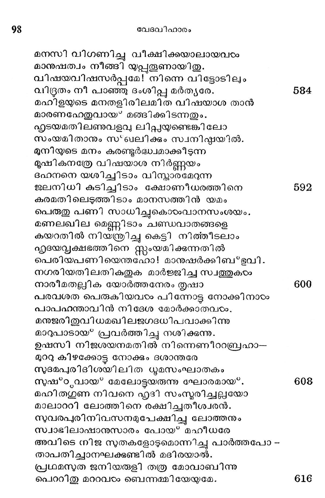